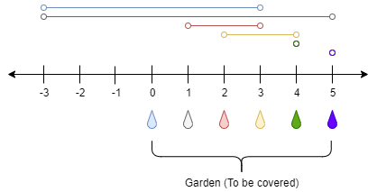

| Category | Difficulty | Likes | Dislikes |
|---|---|---|---|
| Algorithms | Hard | 3590 | 197 |
de-shaw | google | uber | amazon | facebook | salesforce | meesho | akuna-capital
There is a one-dimensional garden on the x-axis. The garden starts at the point 0 and ends at the point n. (i.e., the length of the garden is n).
There are n + 1 taps located at points [0, 1, ..., n] in the garden.
Given an integer n and an integer array ranges of length n + 1 where ranges[i] (0-indexed) means the i-th tap can water the area [i - ranges[i], i + ranges[i]] if it was open.
Return the minimum number of taps that should be open to water the whole garden, If the garden cannot be watered return -1.
Example 1:

Input: n = 5, ranges = [3,4,1,1,0,0]
Output: 1
Explanation: The tap at point 0 can cover the interval [-3,3]
The tap at point 1 can cover the interval [-3,5]
The tap at point 2 can cover the interval [1,3]
The tap at point 3 can cover the interval [2,4]
The tap at point 4 can cover the interval [4,4]
The tap at point 5 can cover the interval [5,5]
Opening Only the second tap will water the whole garden [0,5]Example 2:
Input: n = 3, ranges = [0,0,0,0]
Output: -1
Explanation: Even if you activate all the four taps you cannot water the whole garden.
Constraints:
1 <= n <= 104ranges.length == n + 10 <= ranges[i] <= 100